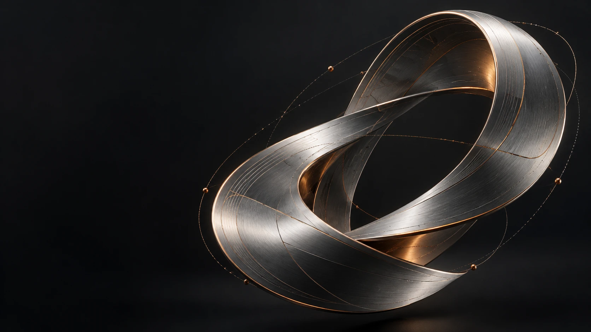

Modéliser
Poser les hypothèses, comprendre les mécanismes et choisir les outils adaptés.
Physique · Optimisation · Analyse
MARIUS HOUNKPETOHOU · ÉLÈVE INGÉNIEUR
De la physique à l’ingénierie des systèmes complexes.
Un cap : l’aéronautique. Une méthode : concevoir, construire et confronter au réel.

MON CAP
Ce qui m’intéresse : comprendre comment la mécanique, les matériaux, les données et le logiciel interagissent pour faire fonctionner un système complet.
Mon socle en physique et ma formation d’ingénieur généraliste nourrissent cet intérêt. Robotique, acoustique, modélisation et composites sont autant de façons de l’explorer.
Découvrir cette démarche dans mes projets ↗01 / PROJETS SÉLECTIONNÉS
Des contextes différents.
Une même ambition : comprendre le problème
et construire une réponse utile.
DANS LES COULISSES DES PROJETS
Des extraits courts, tournés dans les projets.
Choisissez une séquence ou accédez directement à une étape.
POUR ALLER PLUS LOIN
Consulter les rapports, retrouver les méthodes
et comprendre les résultats dans leur contexte.
Les rapports collectifs conservent les noms de leurs auteurs. L’extrait RentImmo omet la page décrivant des opérations du cabinet.
02 / MA FAÇON D’ABORDER L’INGÉNIERIE
Élève ingénieur généraliste en deuxième année, je m’intéresse à l’aéronautique, aux systèmes complexes et aux technologies industrielles. Mon parcours en physique nourrit ma manière d’analyser, de programmer et d’expérimenter.
Poser les hypothèses, comprendre les mécanismes et choisir les outils adaptés.
Physique · Optimisation · AnalyseRelier les données, le code et les interfaces pour rendre un modèle utilisable.
Python · C / C++ · Fortran · FlaskComparer les prédictions aux mesures, interpréter les écarts et documenter les limites.
Expérimentation · ML · VisualisationOUTILS & APPRENTISSAGES
Git / GitHubLinuxPower BIScilabFlexSimCATIA · initiationAbaqus · en apprentissage03 / PARCOURS
Du Bénin au Maroc, un parcours guidé par la curiosité scientifique et l’envie de construire.
Consulter mon CV ↗École Centrale Casablanca · Maroc
IMSP, Université d’Abomey-Calavi · Bénin
IMSP · Mention Bien
Centrale Aéro & Centrale Quanta · Tutorat bénévole en maths et physique (2022–2025) · Responsable du club d’anglais à l’IMSP (2022–2024).
04 / ET ENSUITE ?
Un projet d’ingénierie, une collaboration
ou simplement une idée à explorer.